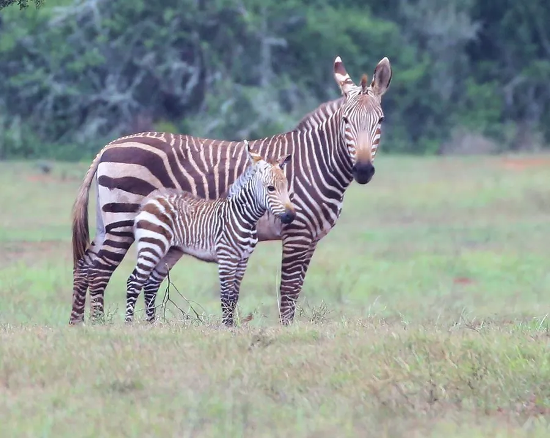

哺乳动物 · 动物界
山斑马 Equus zebra

非洲南部的斑马，喉部有下垂的皮褶、背部有浅色网格纹，善于攀爬山地，是唯一主要生活在山地的斑马。
- 分类
- 门脊索动物门纲哺乳纲目奇蹄目科马科属马属
- 栖息环境
- 南非和纳米比亚的干旱山地、草原与岩坡
- 地理分布
- 南非和纳米比亚的山地保护区及周边区域
- 保护级别
- IUCN 易危（VU）
物种志
山斑马体长 2.1–2.4 米，肩高 1.2–1.4 米，体重 240–370 kg。它的条纹比平原斑马更宽，背部有一条浅色纵纹，喉部有下垂的皮肤皱褶；耳朵较长，蹄小而坚实，适合在岩石山地行走；臀部有横向条纹，形成类似网格的图案。
山斑马分布于南非和纳米比亚的干旱山地、草原和岩坡，是唯一主要生活在山地的斑马。它以草和灌木为食，结成 5–15 只的群体，由雄性带领，善于在陡峭岩坡上攀爬和跳跃。山斑马能长时间不饮水，在干旱季节会迁移寻找水源。雌性妊娠期约 12 个月，每胎 1 仔。由于狩猎、栖息地开发和与家畜竞争水源，山斑马数量下降，被列为易危；南非和纳米比亚的保护区内种群正在恢复。
形态与习性
- 食性草与灌木
- 体长2.1–2.4 m，肩高 1.2–1.4 m
- 体重240–370 kg
- 寿命野外约 20 年
- 繁殖妊娠期约 12 个月，每胎 1 仔
- 特征喉部有下垂皮褶，臀部有网格状条纹
- 攀爬蹄小而坚实，善在陡峭山地行走
趣味知识
- 山斑马喉部有下垂的皮褶，是它最独特的标志。
- 它是唯一主要生活在山地的斑马，善于攀爬岩坡。
- 山斑马臀部的条纹形成类似网格的图案。
- 南非和纳米比亚保护区内的山斑马种群正在恢复。
生态关系
- 捕食 ← 狮子 狮子捕食斑马